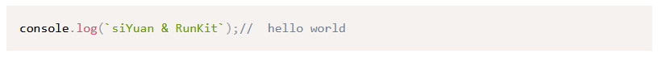
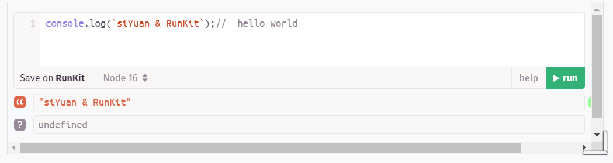
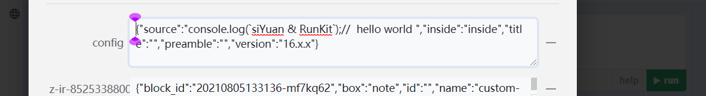
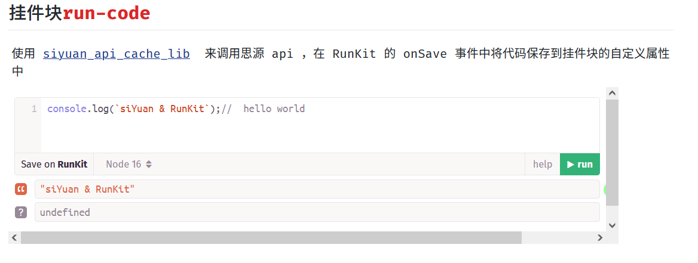
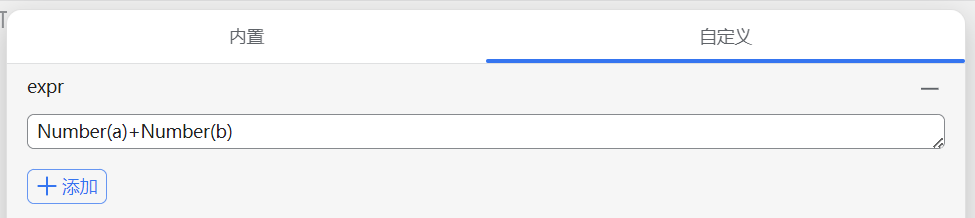
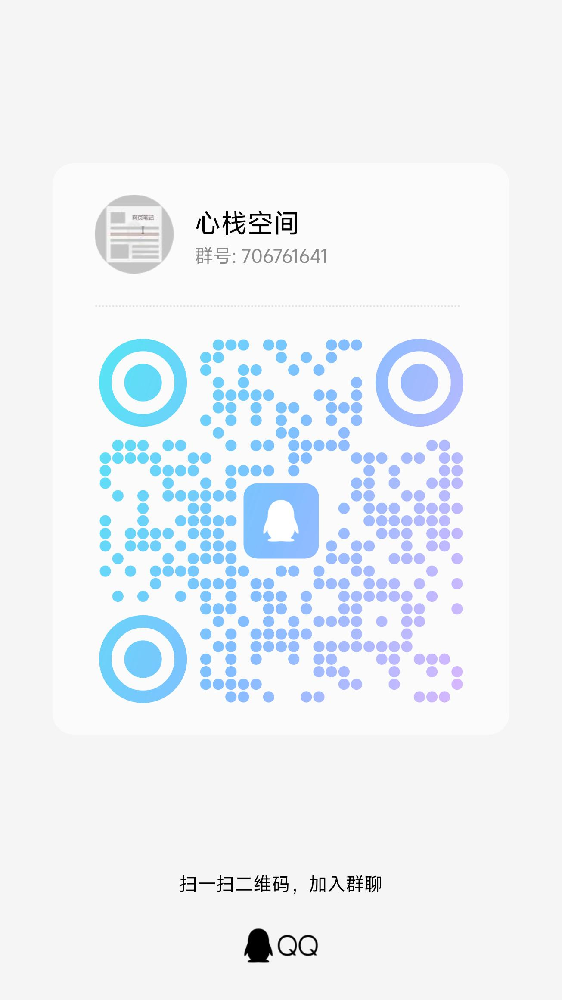

最近更新.rss.xml

在四个月前我创建了 https://github.com/2234839/siyuan_serverless 项目 （求star
1. 点击下方按钮（没有帐号的随便选一个）
ide.cloud.tencent.com:
 https://ide.cloud.tencent.com/templates/52xp20mfy0w
https://ide.cloud.tencent.com/templates/52xp20mfy0w
cloudstudio.net:
https://cloudstudio.net/templates/52xvcorqps0
点击新建工作空间

等待.... , 加载好后会自动运行程序，右下角弹出这两个提示就可以使用了。

直接点击端口为 6806 的‘打开浏览器’
authorization code默认为 test，可以自行修改，配置在 bash_boot.sh 文件中
如果程序关闭了，在终端输入bash ./bash_boot.sh 回车运行即可
大家可以尝试右方的连接 https://oeikdx-pmcqfk-6806.preview.myide.io/stage/build/desktop/?r=ooyf0wg ，如果进不去的话说明我这边关闭了。鉴权码为 test
上面创建的是2c4g，每个月腾讯只给了3000分钟的免费额度，可以自行 fork我的仓库，然后创建一个1c2g的免费空间。

上面创建的是2c4g，每个月腾讯只给了3000分钟的免费额度，可以自行 fork我的仓库，然后创建一个1c2g的免费空间。
大家可以尝试右方的连接 https://oeikdx-pmcqfk-6806.preview.myide.io/stage/build/desktop/?r=ooyf0wg ，如果进不去的话说明我这边关闭了。鉴权码为 test
如果程序关闭了，在终端输入bash ./bash_boot.sh 回车运行即可
authorization code默认为 test，可以自行修改，配置在 bash_boot.sh 文件中
直接点击端口为 6806 的‘打开浏览器’
等待.... , 加载好后会自动运行程序，右下角弹出这两个提示就可以使用了。
点击新建工作空间
ide.cloud.tencent.com:
https://ide.cloud.tencent.com/templates/52xp20mfy0w
cloudstudio.net:
https://cloudstudio.net/templates/52xvcorqps0
它这个空间和一般的 serverless 的区别在于他是持久化的，都只能使用http通信，所以到了之前创建的项目大显身手的时候了。
最近发现腾讯这个云端ide有点搞头。
图片缩小工具，浏览器本地处理 https://txx.cssrefs.com/
科技爱好者周刊（第 289 期）：宽容从何而来
published:2024-02-02T00:23:44Z
updated:2024-02-06T06:04:44Z
这里记录每周值得分享的科技内容，周五发布。(通知 下周春节假期，周刊休息，节后再见。)...
code-inspector-plugin 是一款基于 webpack/vite/rspack/nextjs/nuxt/umijs plugin 的提升开发效率的工具，点击页面上的 DOM，它能够自动打开你的 IDE 并将光标定位到 DOM 对应的源代码位置。
科技爱好者周刊（第 289 期）：宽容从何而来
published:2024-02-02T00:23:44Z
updated:2024-02-06T06:04:44Z
这里记录每周值得分享的科技内容，周五发布。(通知 下周春节假期，周刊休息，节后再见。)...
code-inspector-plugin 是一款基于 webpack/vite/rspack/nextjs/nuxt/umijs plugin 的提升开发效率的工具，点击页面上的 DOM，它能够自动打开你的 IDE 并将光标定位到 DOM 对应的源代码位置。
code-inspector-plugin 是一款基于 webpack/vite/rspack/nextjs/nuxt/umijs plugin 的提升开发效率的工具，点击页面上的 DOM，它能够自动打开你的 IDE 并将光标定位到 DOM 对应的源代码位置。
code-inspector-plugin 是一款基于 webpack/vite/rspack/nextjs/nuxt/umijs plugin 的提升开发效率的工具，点击页面上的 DOM，它能够自动打开你的 IDE 并将光标定位到 DOM 对应的源代码位置。
图片缩小工具，浏览器本地处理 https://txx.cssrefs.com/
计算缓存，在依赖没有发生变化的情况下不会进行新的计算，而是使用之前计算的结果
非前台页面的表达式也会进行计算，方便各种调用情况
本项目为思源笔记插件，旨在实现表达式功能。（https://github.com/2234839/siyuan_expr）
效果

runKit未加载完毕时的样式

挂件块样式

数据存储在自定义属性中

在 OceanPress 中的效果
开发调试
siyuan_api_cache_lib
由于 siyuan_api_cache_lib 内使用了 self.frameElement 而 frameElement 只能在同源的情况下才能访问到
所以我在开发的时候使用 nginx 进行转发来绕过这个问题
(我使用 chrome 关闭跨域的安全策略还是无法在非同源的情况下拿到 frameElement)
配置 iframe 的资源链接为 http://127.0.0.1/widget/run-code/ (run-code 是我在开发的挂件 github.com/run-code，建议查看这个项目里面对本库的使用方式)
对于在思源中的开发调试建议采用 nginx 进行如下配置，然后使用思源的在浏览器中打开，在这里进行开发调试
js
server {
listen 80;
server_name localhost 127.0.0.1;
location / {
#// 思源服务
proxy_pass http://127.0.0.1:6806;
index index.html index.htm;
}
location /widgets/run-code/ {
#// run-code 所启动的服务， run-code 还配置了 base 路径为 /widget/run-code/
proxy_pass http://127.0.0.1:3000;
index index.html index.htm;
}
}
对于 OceanPress 的调试可以采用如下配置
js
server {
listen 80;
server_name localhost 127.0.0.1;
location / {
#// oceanPress 生成的静态站点目录
alias 'D:/TEMP/思源test/';
}
location /widget/run-code/ {
proxy_pass http://127.0.0.1:3000;
proxy_set_header Host $host;
index index.html index.htm;
}
}
挂件块 run-code
这个可以说是思源最古早的一批挂件了，但随后三年我没有维护它。
使用 siyuan_api_cache_lib 来调用思源 api ，在 RunKit 的 onSave 事件中将代码保存到挂件块的自定义属性中

这个可以说是思源最古早的一批挂件了，但随后三年我没有维护它。

蓝色块的自定义属性
定义块c为表达式（具有书签：expr）:
Number(a)+Number(b)
Number(a)+Number(b)
在安装本插件后，会自动将该块内容作为表达式设置到该块的属性[expr]，然后对该表达式求解将结果更新到块内容，就像右侧块：
33
在安装本插件后，会自动将该块内容作为表达式设置到该块的属性[expr]，然后对该表达式求解将结果更新到块内容，就像右侧块：
33
定义块c为表达式（具有书签：expr）:
和块b：
22
和块b：
22
例如有块a：
11
例如有块a：
11


s
不改变音调情况下Audio音频的倍速合成JS实现
published:Thu, 29 Feb 2024 14:22:22 +0000
音视频合成的时候，有倍速合成的需求，起初，我以为这只是个手到擒来的小需求，细究之下发现问题并不简单……
不改变音调情况下Audio音频的倍速合成JS实现
published:Thu, 29 Feb 2024 14:22:22 +0000
音视频合成的时候，有倍速合成的需求，起初，我以为这只是个手到擒来的小需求，细究之下发现问题并不简单……
今天才知道，Web网页也能阻止息屏了
published:Sun, 17 Mar 2024 15:35:45 +0000
全新的Screen Wake Lock API，可以让网页无论放置多久，都不要担心熄屏，或出现屏保，Web如今越来越强了。